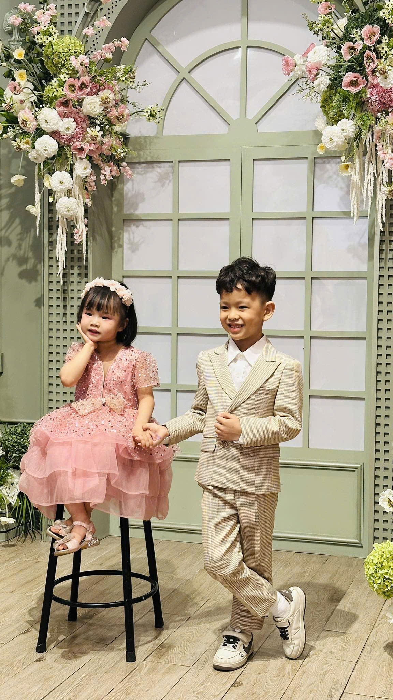
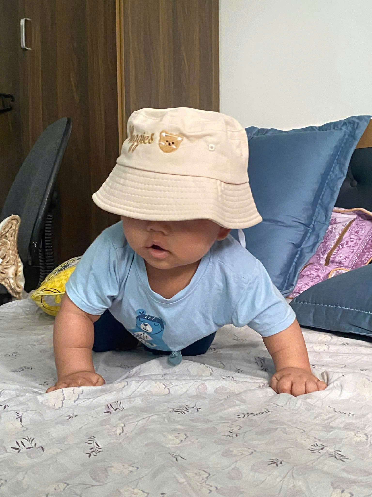

What this site teaches
A multipage website uses separate HTML files for separate pages, while sharing the same CSS and JavaScript files.
Simple Multipage Website
This home page now has a featured family photo and a small gallery. It still keeps the structure simple, so the code is easy to study.
See the Games Page
A multipage website uses separate HTML files for separate pages, while sharing the same CSS and JavaScript files.
The links in the top navigation point to other HTML files in the same
folder, such as games.html, memory.html, and
video.html.
New pages can be added by creating another HTML file and then adding a new navigation link to every page.
Photo Moments

